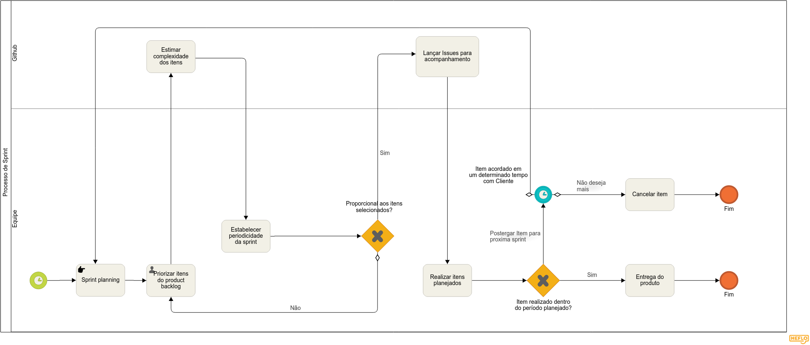
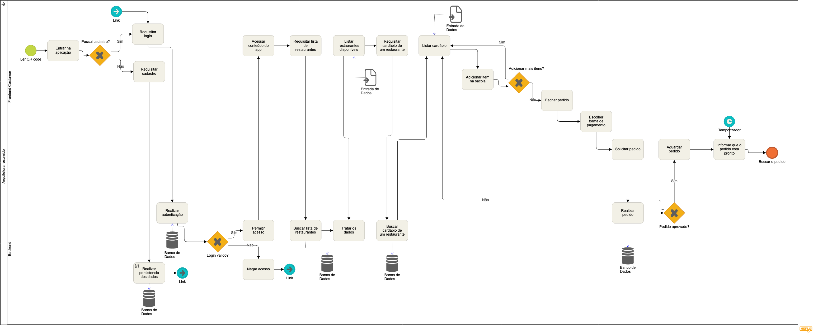

Diagramas
Diagramas
DG01 - Decisão do tema

| DG01 | Decisão do tema |
|---|---|
| Versão | Atual: 1.1 (04/09) Anterior: 1.0 |
| Descrição | Diagrama para ilustrar o processo de decisão do tema a ser trabalhado durante a disciplina. |
| Autor | Shayane Alcântara |
DG02 - Movimentação no Zenhub

| DG02 | Movimentação no Zenhub |
|---|---|
| Versão | Atual: 1.1 Anterior: 1.0 (04/09) |
| Descrição | Diagrama para ilustrar o processo de movimentação das issues utilizando o Zenhub. |
| Autor | Elias Bernardo |
DG03 - Elicitação de Requisitos

| DG03 | Elicitação de Requisitos |
|---|---|
| Versão | Atual: 1.0 (05/09) Anterior: -- |
| Descrição | Diagrama para ilustrar o processo de elicitação de requisitos, bem como sua síntese. |
| Autores | Matheus Blanco, Pedro Feo, Saleh Kader |
DG03.1 - Elicitação de Requisitos: Elicitação

| DG03.1 | Elicitação de Requisitos |
|---|---|
| Versão | Atual: 1.0 (05/09) Anterior: -- |
| Descrição | Diagrama para ilustrar o subprocesso de elicitação de requisitos. |
| Autores | Matheus Blanco, Pedro Feo, Saleh Kader |
DG03.2 - Elicitação de Requisitos: Síntese

| DG03.2 | Elicitação de Requisitos |
|---|---|
| Versão | Atual: 1.0 (05/09) Anterior: -- |
| Descrição | Diagrama para ilustrar o subprocesso de síntese dos requisitos elicitados. |
| Autores | Matheus Blanco, Pedro Feo, Saleh Kader |
DG04 - Processo de Trabalho

| DG04 | Processo de Trabalho |
|---|---|
| Versão | Atual: 1.1 (05/09) Anterior: - |
| Descrição | Diagrama para ilustrar o processo de trabalho da equipe |
| Autor | Sara Silva |
DG05 - Git Flow

| DG05 | Git Flow |
|---|---|
| Versão | Atual: 1.1 (05/09) Anterior: 1.0 |
| Descrição | Diagrama para ilustrar o processo de git flow empregado pela equipe |
| Autor | Pedro Rodrigues |
DG06 - Processo de Sprint

| DG06 | Processo de Trabalho |
|---|---|
| Versão | Atual: 1.1 (05/09) Anterior: - |
| Descrição | Diagrama para ilustrar o processo de elaboração e desenvolvimento de sprint |
| Autor | Leonardo Barreiros |
DG07 - Arquitetura

| DG07 | Arquitetura |
|---|---|
| Versão | Atual: 1.0(05/09) Anterior: - |
| Descrição | Diagrama para ilustrar o processo de arquitetura |
| Autor | Alan Lima |
DG08 - CI/CD

| DG08 | Pipeline |
|---|---|
| Versão | Atual: 1.0(05/09) Anterior: - |
| Descrição | Diagrama que ilustra o comportamento da pipeline de integração contínua |
| Autor | Guilherme Marques |
Versões anteriores
DG01 - Diagrama BPM - Decisão do tema

| DG01 | Decisão do tema |
|---|---|
| Versão | Atual: 1.0 (01/09) Anterior: - |
| Descrição | Diagrama para ilustrar o processo de decisão do tema a ser trabalhado durante a disciplina. |
| Autor | Shayane Alcântara |
DG02 - Movimentação no Zenhub

| DG02 | Movimentação no Zenhub |
|---|---|
| Versão | Atual: 1.0 (04/09) Anterior: -- |
| Descrição | Diagrama para ilustrar o processo de movimentação das issues utilizando o Zenhub. |
| Autor | Elias Bernardo |
DG05 - Git Flow

| DG04 | Git Flow |
|---|---|
| Versão | Atual: 1.0 (05/09) Anterior: - |
| Descrição | Diagrama para ilustrar o processo de git flow empregado pela equipe |
| Autor | Pedro Rodrigues |
Referências
Secretaria de Estado de Gestão e Planejamento. Manual de Modelagem de Processos Usando Bizagi. Disponível em: http://www.sgc.goias.gov.br/upload/arquivos/2017-04/manual-de-modelagem-de-processos-usando-bizagi.pdf. Acesso em: 01 de setembro de 2019.